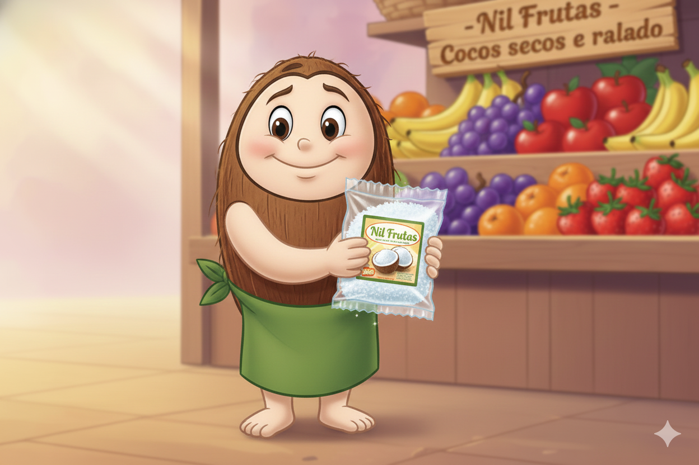

Sobre a Nil Frutas - Coco seco e ralado
A Nil Frutas é uma empresa atuando no segmento de comércio varejista de frutas e produtos hortifruti.
O objetivo da empresa é oferecer frutas frescas e de qualidade, atendendo às necessidades de consumidores residenciais e pequenos estabelecimentos comerciais, com preços acessíveis e bom atendimento.
A loja trabalha com diferentes linhas de produtos, incluindo frutas tropicais, cítricas e importadas, prezando pela diversidade e pela procedência dos alimentos comercializados.
Este site foi desenvolvido utilizando as linguagens HTML, CSS e JavaScript, sem o uso de plataformas prontas.
Para imagem de logotipo foi utilizado desenho feito no papel com auxilio da IA para recriar o desenho original em formato animado.
